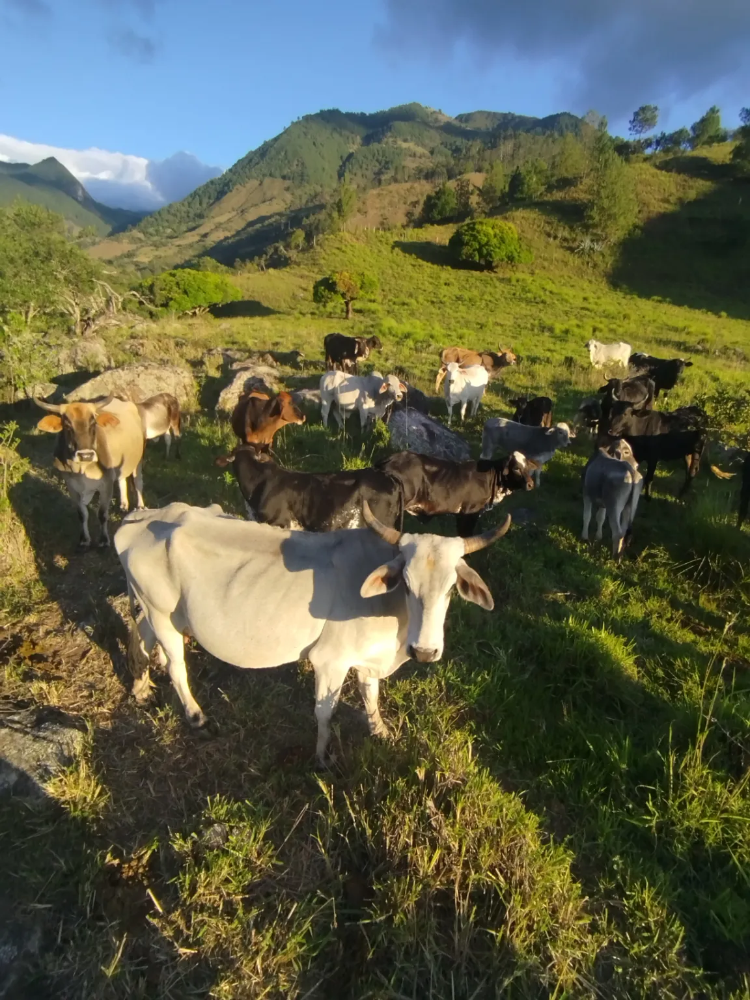
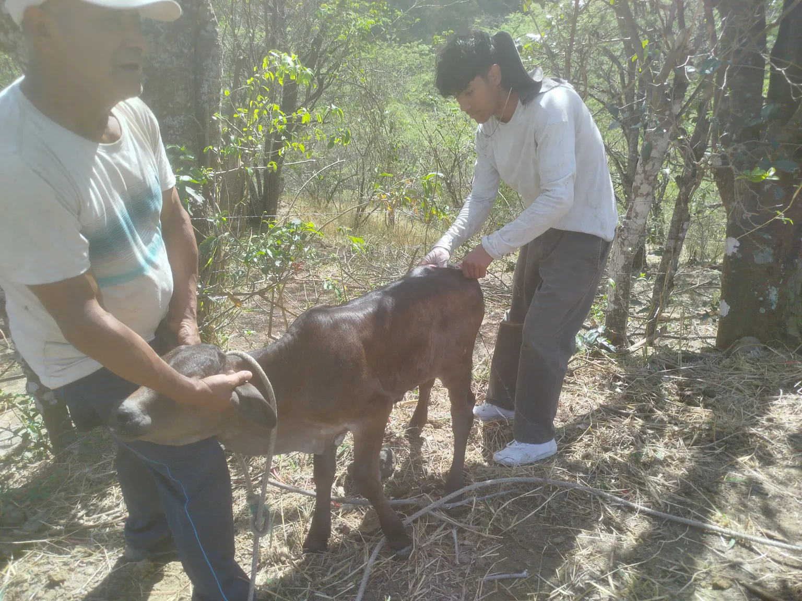
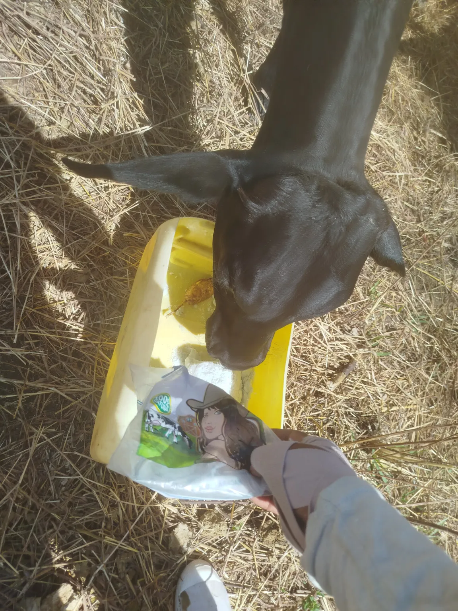

01 / PASTOREO
Espacios para crecer
Los potreros y el manejo adecuado del pasto ayudan a mantener una alimentación natural y un entorno saludable.
Bienvenidos a Hacienda Raíces del Campo: un espacio dedicado al trabajo ganadero, al cuidado de los animales y al respeto por la tierra.
Entre montañas, pastizales y caminos rurales, el trabajo ganadero une generaciones. Cada jornada representa dedicación, conocimiento y respeto por los animales que forman parte de la vida del campo.

Este espacio presenta la identidad de la hacienda y su compromiso con una ganadería responsable. El nombre y el emblema son una propuesta inicial que puedes personalizar con el nombre real de tu finca o emprendimiento.
La producción ganadera responsable comienza con prácticas sencillas y constantes: agua limpia, alimentación adecuada, espacios seguros, observación diaria y atención veterinaria cuando sea necesaria.
Conocer a los animales y atender sus necesidades es parte esencial de una ganadería consciente.
Los potreros y el manejo adecuado del pasto ayudan a mantener una alimentación natural y un entorno saludable.

La observación diaria permite reconocer cambios en el comportamiento y procurar atención oportuna a cada animal.

Una dieta apropiada para cada etapa y el acceso permanente a agua limpia son fundamentales para su bienestar.
La ganadería puede avanzar junto con el respeto por el entorno. Mejorar el manejo de los pastizales, proteger las fuentes de agua y brindar bienestar a los animales son pasos importantes para cuidar el presente y el futuro rural.
Una sección preparada para mostrar los animales disponibles, sus características y fotografías. Los ejemplos siguientes son categorías ilustrativas: reemplázalas por los animales reales de la hacienda.
Espacio para describir edad aproximada, características, manejo y fotografías de los ejemplares.
Disponibilidad: actualizar según inventario real.Incluye aquí información de cada ejemplar, procedencia, características y datos que desees compartir.
Disponibilidad: actualizar según inventario real.Presenta los animales adultos con una descripción clara y fotografías actuales de cada uno.
Disponibilidad: actualizar según inventario real.Añade aquí los datos oficiales de contacto para que las personas interesadas puedan comunicarse con la hacienda y solicitar información sobre sus actividades o su catálogo.
Antes de publicar, reemplaza los textos de ejemplo por información real. No publiques números personales sin autorización.
Un homenaje a quienes trabajan cada día con dedicación, mantienen vivas las tradiciones y construyen el futuro de la ganadería.